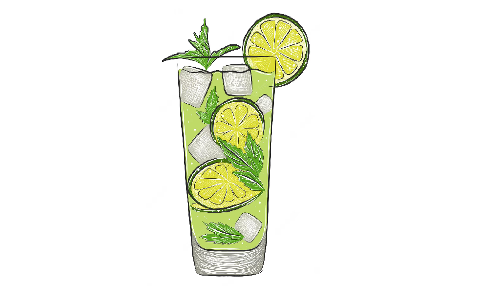

Aperol Spritz
Aperol Spritz stał się jednym z najbardziej popularnych koktajli na świecie, a pozycja w czołowej dziesiątce najlepiej sprzedających się drinków na świecie dobitnie o tym świadczy. Jego historia sięga roku 1919, kiedy to włoskie rodzeństwo Barbieri wprowadziło na rynek aperitif na bazie goryczki, gorzkiej pomarańczy, rabarbaru i wyciągu z ziół. Napój już w latach pięćdziesiątych ubiegłego wieku był chętnie serwowaną alternatywą dla weneckiej mieszanki wina i gazowanej wody. Apogeum sławy Aperol Spritz zawdzięcza przejęciu marki przez firmę Campari, która dołożyła wszelkich starań aby rozreklamować koktajl w przestrzeni publicznej, między innymi dzięki wprowadzeniu na rynek w 2011 drinka w butelce gotowego do podania.
Tom Collins
Tom Collins to jeden z najpopularniejszych drinków na bazie ginu – znany i podawany w barach na całym świecie. Tom Collins to koktajl wykonany z ginu, soku z cytryny, syropu cukrowego i wody gazowanej. Drink ten jest idealny na letnie upały.
Pierwsza wzmianka o tym drinku pochodzi z roku 1876 kiedy to Jerry Thomas umieścił przepis na ten koktajl w swojej książce pod tytułem „Przewodnik barmana”.

Black Russian
Black Russian, czyli Czarny Rosjanin to mocny i klasyczny drink, który składa się jedynie z dwóch składników, przez co jest bardzo prosty do przygotowania. W skład drinka wchodzi wódka i likier kawowy, a żeby podkreślić wyrazistość smaku zaleca się serwowanie napoju na lodzie.
Historia napoju sięga lat 50, a pierwszy raz, kiedy został zaserwowany miał miejsce w Belgii przez belgijskiego barmana dla amerykańskiej ambasador. Prosty skład oraz wyrazisty smak sprawiają, że drink zyskał dużą popularność. Jest kojarzony z Białym Rosjaninem, jednak nie posiada w swoim składzie mleka, ani śmietanki.

Mojito
Mało jest na świecie drinków, które doczekały się takiej popularności jak mojito. Pomimo względnej prostoty wykonania i bogactwa wariacji na temat składników, tradycyjny przepis na ten koktajl jest jeden i ten sam od XIX wieku. Pomysł na połączenie białego rumu z sokiem limonkowym, cukrem, miętą i wodą sodową powstał na Kubie, a konkretniej na ulicach Hawany. Wartym uzupełnienia faktem, jest prawdopodobna historia stworzenia napoju alkoholowego z sokami owoców tropikalnych i orzeźwiającymi ziołami przez żeglarzy Sir Francisa Drake’a na obszarze Morza Karaibskiego, podczas jego wyprawy dookoła Ziemi. Jako warianty, najczęściej stosuje się do uzupełniania koktajlu toniki, a także eksperymenty z aromatyzowanymi gatunkami rumu.